- Launch openev, and load up DEVCOURSE_greyscale_raster.tif (it should be
in openev's html directory).
- Launch the layers dialog (Edit->Layers...).
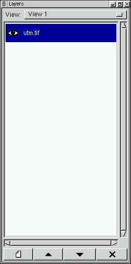
- Place the mouse over the layer dialog, click to select it, then hit the "F1" key. This should bring up
OpenEV's layer dialog help. This is one of OpenEV's standard help mechanisms- if you
place the mouse over a dialog or view window and hit the "F1" key, it will bring up
the help for that dialog, if help is available for it.
- Right-click on the greyscale raster layer name. This will bring up a
raster properties dialog.
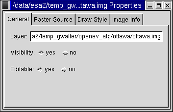
- Under the "Raster Source tab, change the view scaling by sliding the
Scale Min and Scale Max slider bars. You can also type the minimum
and maximum values in. In a greyscale image, values falling below
Scale Min are set to black, and those above Scale Max are white.
- You can also change the view scaling by clicking on the
enhancement icons (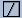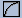
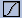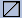
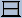) on the main window
icon bar.
- Select 10:1 from the zoom control menu 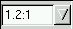, then
under the "Draw Style" tab, toggle the "Subpixel Interpolation"
menu between "Off (Nearest)" and "Linear".
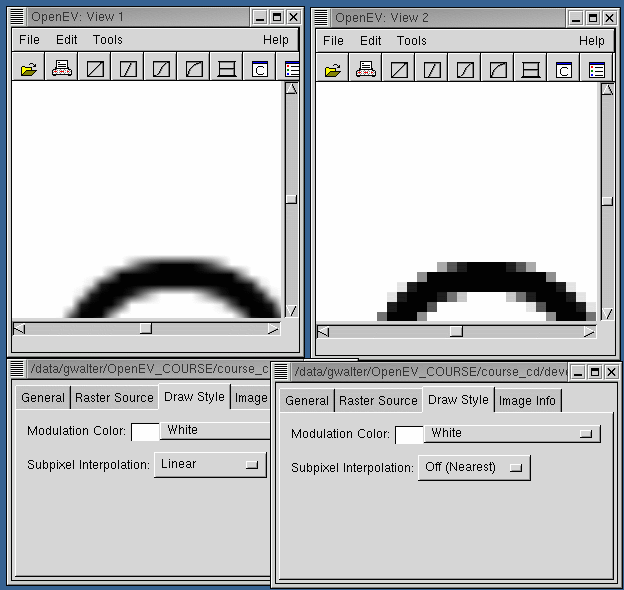
- Click the 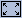 icon or press the "Home" key to rescale the raster to its
default display size.
- Click 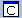 to bring up the classification dialog.
- Toggle through the colour ramps menu to the "Green-Yellow-Red" Ramp, then click "Apply".
- Click the 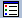 icon to create a legend for it.
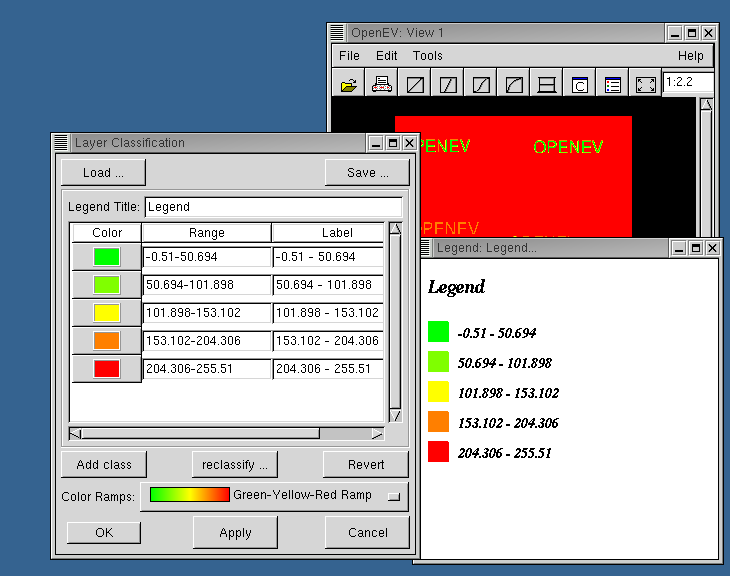
- The colour ramps are simple text files located in the "ramps" directory of
OpenEV. The green-yellow-red one below is defined by the file "green_yellow_red_ramp.txt",
and contains the following:
Green-Yellow-Red
0
0.0 (0.0, 1.0, 0.0, 1.0)
0.5 (1.0, 1.0, 0.0, 1.0)
1.0 (1.0, 0.0, 0.0, 1.0)
The first line specifies the name, the second line indicates the type of colour ramp
(0 for continuous, 1 for discrete values), and the subsequent lines indicate the
colours to vary between, specified as a red-green-blue-alpha grouping, where alpha
is the opacity level. You can reset the location of your ramps directory by editing the
".openev" file in your home directory to contain the line (this one sets it to /data/ramps):
ramp_directory=/data/ramps
- Now place the mouse over the window and press control and the left mouse button, and
drag out a region on the image. This should draw an orange rectangle highlighting the
area you have selected, and when the mouse button is released, OpenEV will zoom in to
this area. Pressing control and holding the left mouse button without dragging will
result in a continuous zoom in; the right mouse button is used to zoom out. There
many other key sequences that
can be used to zoom in different ways.
- Next launch the Interactive Python Shell ("Edit->Python Shell").
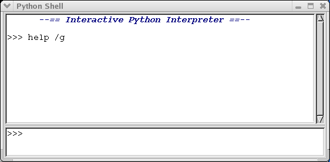
- At the command prompt, enter "get im1", then "show im1" (without the quotes). A
new window should pop up:
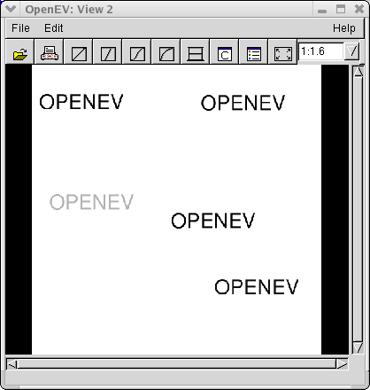
This demonstrates the use of two OpenEV python shell core commands, get
(extract the underlying data from the currently active view/layer into a
shell variable- in this case the shell variable will be called "im1"),
and show (display an array or GvShapes variable in
an OpenEV view). If "get /s im1" is used instead of "get im1", OpenEV will
try to grab a screenshot rather than extracting the underlying data (note:
with some video card drivers this doesn't work very well):
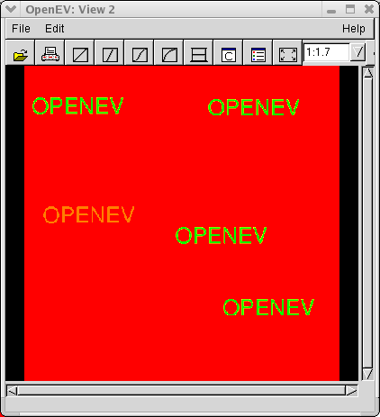
If you are not using the /s option and want to extract only part of the
data, you can specify a "Region of Interest" (ROI) on the OpenEV view using
the ROI Tool:
- Activate the ROI tool by selecting the "Edit->Edit Toolbar" menu entry
and pressing the "Draw ROI" button.
- Left click and drag out the ROI on your OpenEV view (it should appear
as an orange rectangle).
If an ROI is drawn, "get im2" should grab the data that corresponds to
the region you selected rather than the whole image. ROI's are ignored
if the screenshot (/s) option is used.
- Regular python functions can also be run from the command
shell (the difference between OpenEV commands and regular python functions is
explained in the python shell help).
On startup, OpenEV's python shell imports a variety of functions from
Numeric python for creating and
manipulating arrays of data. Enter "shape(im1)" to see the size of
im1 (it should be 512x512 since the whole image was extracted),
then set the first 50 rows and lines to zero: "im1[:50,:50]=0".
Enter "newview" to create a new OpenEV view, then "display(im1)"
to see the the altered im1 in that view (display is a function that
behaves similarly to the show command- if you want to display
the results of an expression rather than just a variable, you
should use display rather than show, eg. "display(im+75))":
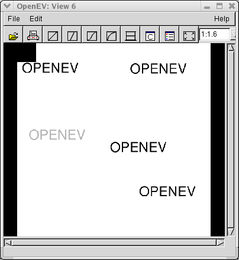
Python arrays are indexed from 0:N-1, where N is the length of the
array in the dimension being indexed. Slices take the form
start:stop:step, where start is the start index, stop is the index
of the element after the last element to be included, and
step is the step size. If the start, stop, or step indices are left out,
they are set to 0,N, and 1 respectively for a dimension of length N.
Continuing to operate on im1, try setting "im1[::2,:]=0". This will
set every second line to zero:
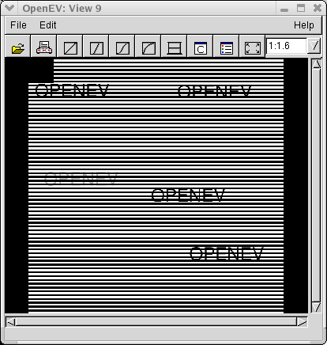
Numeric Python offers much more array manipulation capability, including
matrix addition/subtraction, multiplication/division
(both element-wise and regular multiplication), and logical operations.
It also overloads common operators such as "+" so that
elementwise addition can be accomplished using statements like
"im3=im1+im2", where im1 and im2 are same-size arrays. It also has
a number of other modules that can be imported to do
more sophisticated operations (eg. FFT).
Note that if you are not using floating point arrays, some
operations may result in overflow errors. These errors can be avoided
either by using floating point arrays to start with, or
by casting the arrays in the statement, for
example: "im3=im1.astype('d')+im2".
The type codes in Numeric python include:
- Character ('c')
- Integer ('1','s','i','l')
- Unsigned Integer ('b','w','u')
- Float ('f','d')
- Complex ('F','D')
The division within each type corresponds to different numbers of bits
used to store the type (eg. 8-bit versus 16-bit integer). You can
create arrays of any of these types in Numeric Python using the
"array", "ones", and "zeros" functions.
- Try entering "b=arange(10)", then
"plot(b,xaxis='my x',yaxis='my y',title='my plot')" in the python shell. The
Numerical python "arange" function creates an array of values (in this case,
the array [0,1,2,3,4,5,6,7,8,9]). The plot function call above
plots the array b, and labels it with 'my x' as the x axis, 'my y' as
the y axis, and 'my plot' as the title. OpenEV's plot function is based on
Gnuplot.
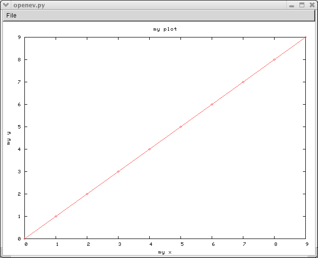
Enter "commands" and "functions" at the command line to see lists of the
available OpenEV commands and currently loaded python functions. "help /g" or "help -g"
will display these in graphical format.
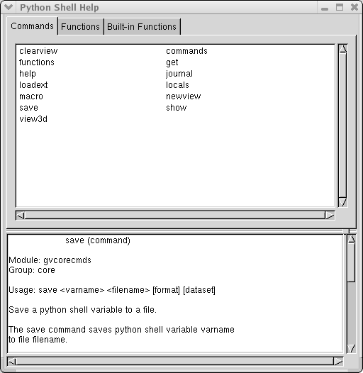
- Launch a new view ("File->New View"), and select "File->Open 3D".
Choose "DEVCOURSE_greyscale_raster.tif" as
both the drape and the DEM (Digital Elevation Map). Set the mesh level of detail
(LOD) to 5. This means that OpenEV will use the values in DEVCOURSE_greyscale_raster.tif to
provide both the intensity (drape) and height (DEM) values in display. The mesh
LOD specifies the resolution of the grid used to sample the DEM for height values
(higher LOD means better resolution).
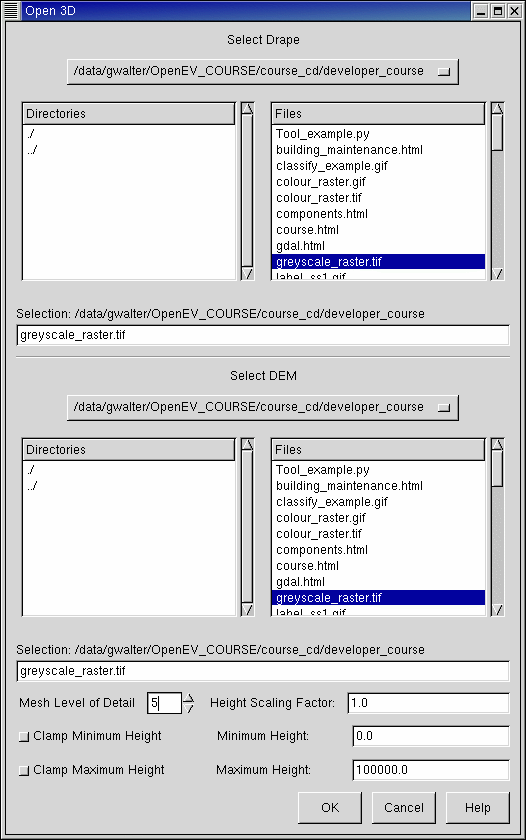
- The view will initially appear white because the view is quite zoomed in and
there is not a lot of variation in DEVCOURSE_greyscale_raster.tif. Press Control and hold
down the right mouse button to zoom out until you can see the raster more clearly.
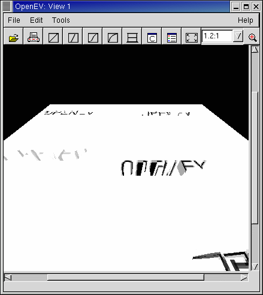
This example demonstrates the limitations of using a regular grid of values
to sample a DEM- it doesn't work well on an image that is mostly uniform, but
has a few radical changes. It looks okay for many natural scenes, but will have
to be updated if urban fly-throughs are to look good in OpenEV. The next image
shows the results if the mesh LOD is upped to 8:
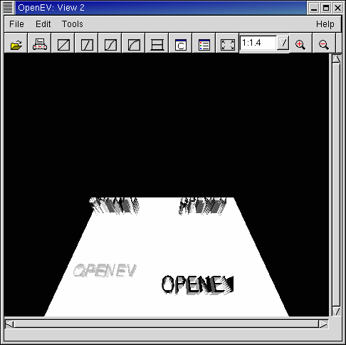
This is somewhat better, but much slower to render. Some applications use a
triangulated irregular network (TIN) representation of the DEM to get around this
problem- this allows higher resolution where it is needed; lower where
the scene is uniform. This sort of thing will be a consideration if further
development is done on OpenEV's 3D capabilities.
- Press "+" and "-" on the keyboard to see the height scaling change. Holding
the "Shift" button while pressing these will give steps that are 10 times larger.
- Press "F2" to toggle between 2-D and 3-D viewing modes.
- Launch the Print dialog using File->Print or
the
icon.
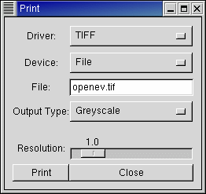
This dialog will allow you to print what you see in OpenEV's view area directly to
a printer or to file.
- In a new view, load up the file "DEVCOURSE_vector_classes.shp" from openev's html
directory.
- Launch the vector layer properties dialog by right-clicking on the
DEVCOURSE_vector_classes.shp layer in the layer dialog.
- Alter the edge and fill colours of the polygons using the "Areas" section under
the "Draw Styles" tab.
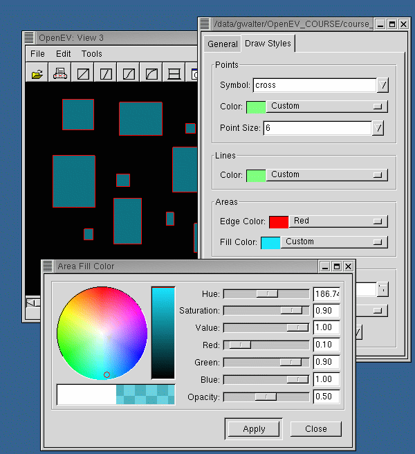
- Launch the vector attributes dialog (Edit->Vector Layer Attributes), and select
one of the polygons by left-clicking on it. Each polygon has a an attribute called
"class" that has a value of "office", "gym", or "playground".
- Click to bring up the classification dialog
for vector layers, and apply one of the ramps. This should colour the polygons according
to their class. If a vector file has several attribute fields, the menu bar in the
top right corner of the dialog will allow you to choose which one the classification
should use to distinguish between polygons.
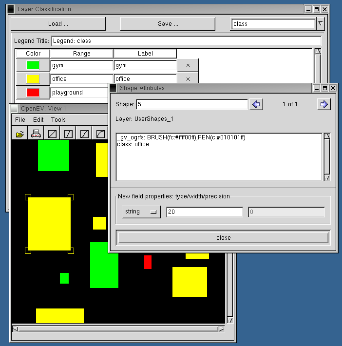
Vector files containing point and line objects can also be manipulated through
their vector property dialogs and the classification tool.
- OpenEV also has a number of other standard items, briefly described here:
- File->Import: This asks for a (raster) filename, then converts the raster to GeoTiff format
and creates tiled overviews for it. The new raster is saved to a file with extension ".tif".
- File->Save Project (only in some OpenEV distributions): This saves the current
openev state (number of views, what is loaded in
them) to an xml file. For instance, if you start OpenEV, load up "DEVCOURSE_greyscale_raster.tif", and
then save the project to projectfile_example.opf (.opf = Openev Project File), it will
contain:
<GViewApp>
<GvViewWindow module="gvviewwindow" width="620" height="680" x="46" y="94">
<title> View 1</title>
<GvViewArea Mode="0" Raw="0">
<Translation x="-256.0" y="-256.0"/>
<Zoom> 0.211888298392</Zoom>
<Background red="0.0" green="0.0" blue="0.0" alpha="1.0"/>
<Layers>
<GvRasterLayer mode="1" mesh_lod="7.162109375" visible="1" read_only="0" name="/data/openev/html/DEVCOURSE_greyscale_raster.tif">
<Prototype band="1">/data/openev/html/DEVCOURSE_greyscale_raster.tif</Prototype>
<Source index="0" min="0.0" max="255.0" nodata="-100000000.0" band="1">/data/openev/html/DEVCOURSE_greyscale_raster.tif</Source>
</GvRasterLayer>
</Layers>
</GvViewArea>
</GvViewWindow>
</GViewApp>
This file indicates that there is one view, with title "View 1", of width 620 and height 680 pixels.
The view area is translated -256 pixels in both x and y directions and has a zoom level 0.211888298392.
The background is black, and the view area contains a single raster layer, DEVCOURSE_greyscale_raster.tif.
When "projectfile_example.opf" is loaded up in openev, the views present when the project file
was saved (in this case, "View 1" with DEVCOURSE_greyscale_raster.tif in it) will be recreated, and all other
views closed. "Save Project" uses the "serialize" functions found in gviewapp.py, gvviewwindow.py,
and others to create a list of the items to include in the project file, and uses gdal.SerializeXMLTree
to convert this list to XML text for writing to a file. GvViewWindowFromXML in gvviewwindow.py recreates
a view based on the values saved in the project file.
- Edit->Undo: Undoes the last operation performed on a vector layer.
- Edit->Go To: Translate the view to center on the location entered in the Go To dialog.
- Edit->3D Position: Translate the 3D position to the location and orientation entered in the
3D Position dialog.
- Edit->Preferences: Allows the user to set various preferences. See the
Preferences section of OpenEV's help for more.